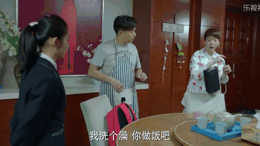
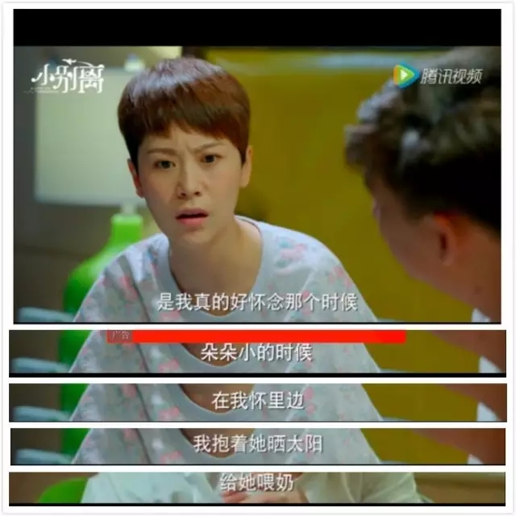
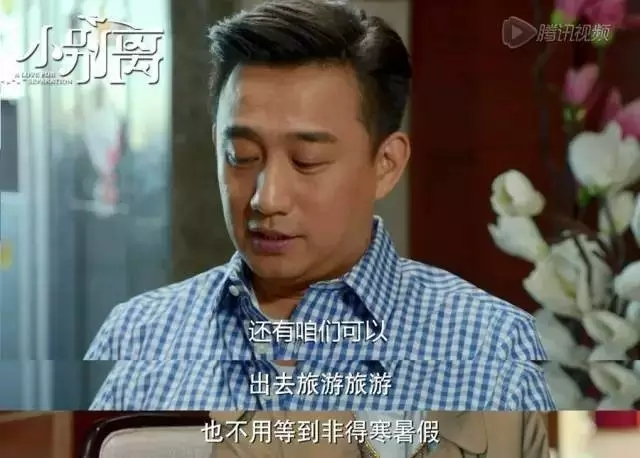
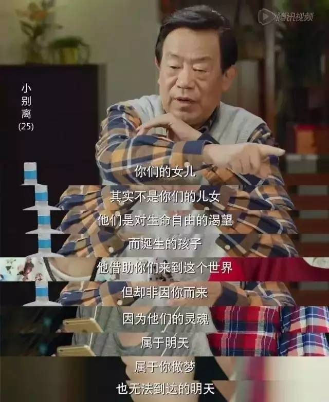

互惠动态
|
|
如果孩子长大离开了，你的婚姻还剩下什么？（看完好心酸）
导读：你们有没有看热播的《小别离》？媒体称之为初高中生版的虎妈猫爸，因为每一点都是赤裸裸的现实，让为人父母的观众们又爱又恨。
因为孩子还小，孩子出国留学这种事离自己太远，没有切身体会过，所以也无从说起。
最近，小别离大结局了，看到最后的时候，终于有戳中痛点的剧情了！
我们先来回顾下方圆和董文洁在送走孩子以后的一段剧情：
这哭的真的让人动容对不对？不怕大家笑话，小编在看到董文洁哭的撕心裂肺时，也不由的鼻子一酸，眼泪双流。尤其是那句“怎么办啊？我们以后怎么过啊！”
你的孩子现在多大了？你有没有想过如果有一天，他离开你了，你的生活会变成什么样子？你一定听到甚至说出过这样的话：
说这样的话时，你的孩子一定还没有离开你身边，至少没有真正远离你的生活，不再需要你！所以，你才能如此轻松的玩笑式的说出些话来吧？
你看方圆和董文洁，搁在现实生活中，其实算得上是恩爱有加的夫妻。
方圆是一个一回家就哄老婆带孩子还要做饭菜的好好先生。

两个人平时还能打情骂俏，夜间娱乐活动也是很丰富。
总之，这样的两口子看起来幸福美满，似乎孩子在不在身边，关系都不大，两个人照样你侬我侬。
可实际上呢？孩子出国了，两个人的婚姻就像只剩下了一个空客，尤其是作为妈妈的董文洁，甚至想要通过再生一个孩子来弥补心里的空虚落寞。
毕竟，谁不怀念孩子跟我们亲密无比的那几年时光呢？虽然累，却很充实不是吗？

这样的夫妻尚且如此，纵观那些把全部身心都放在孩子身上去的爸爸妈妈们，不害怕孩子离开都是假的吧！
原本以为幸福快乐的生活，原本以为我们拥有一切，可一旦孩子不再需要我们，我们才发现：生活早已千疮百孔，危机四伏！
所以我们焦虑啊，所以我们总说不是孩子离不开我们，而是我们离不开孩子啊！
每个妈妈大概在辛辛苦苦带孩子的过程中都会盼着：啊，真希望孩子早点长大啊，长大了我就可以享受了，就轻松了！
孩子长大了，我和老公就可以过二人世界了，再也不用担心有个拖油瓶了！

孩子长大了，我就有时间和精力对自己好一点了，可以和朋友们去聚会逛街了。
孩子长大了，我就……
哪个当妈的没有幻想过孩子长大后自己的生活状态呢？可理想很丰满，现实很骨感。
继续这样下去，等离别的那一天到来，恐怕除了像董文洁一样歇斯底里的哭喊着“我该怎么过下去啊”，已经无能为力了吧？
因为啊，那个时候才蓦然发现自己和老公再也说不上几句话了，那个时候才发现曾经的朋友圈子早就所剩无几了，曾经的业余爱好早就丢到八爪国去了。
如果真的能预见未来，恐怕没有人愿意有这样的结局吧？
我们都听过龙应台的那句：＂所谓父女母子一场，只不过意味着，你和他的缘分就是今生今世不断地在目送他的背影渐行渐远。你站立在小路的这一端，看着他逐渐消失在小路转弯的地方，而且，他用背影默默告诉你：不必追。”
可是不能听过、感慨过就觉得足够了，你应该去实现它。爱孩子，但不要用这份爱去要挟孩子！
是啊，纪伯伦不是说过吗？我们的儿女，其实不是我们的儿女，他借助我们来到这个世界上，却非因我们而来。

所以啊，趁着还来得及，在爱孩子的同时，在目送他渐渐远离我们之时，别忘了去充实我们的婚姻，去充实我们自己吧！
说到底，能陪你到最后的，除了你自己，就是你一生的伴侣了，别把最重要的东西弄丢了，可好？

关于互惠，您了解得够多么？
请外国学生来家庭照顾孩子，辅导孩子外语？
只了解这些是不够的！
获取更多信息请参考以下方式：
联系ASC：
电话：86-21-61116069(上海中心）
86-25-66065662（南京中心）
全国家庭均可申请！
手机：15601666586（可加微信）
Q Q：3259637585
微信：asc-center
邮箱：info@asc-center.com
网站：www.asc-aupair.com

感谢您对我们的关注